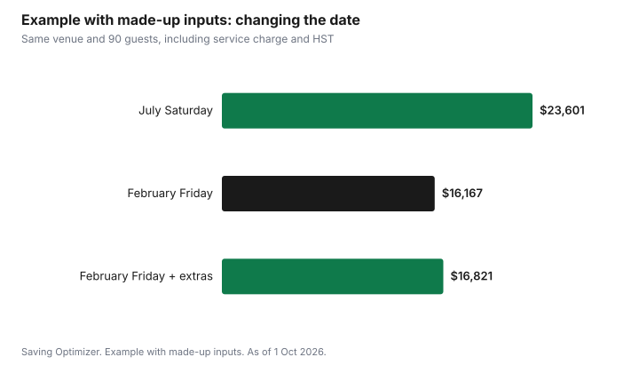

Weddings · Canada
Winter and Off-Season Weddings in Canada: Where the Real Discounts Are

In Canada, the easiest way to cut a wedding's cost without cutting guests is to move the date away from summer and early-fall Saturdays, as of 1 October 2026. Venues and vendors are most in demand on those dates, so a Friday, a Sunday, a weekday, or a month like January, February, March or November gives you more room to negotiate a lower rental fee or a lower food-and-drink minimum. Winter weddings add a few costs of their own, such as safe transport, coat check and a weather backup, but those are usually smaller than the savings. The real discount comes from getting it in writing in the contract.
Key takeaways
- Saturdays from late spring to early fall are usually the most in-demand dates; moving off them is the biggest lever.
- Ask for a lower minimum spend, not just a lower room fee; the minimum often matters more.
- December venues may already be decorated for the holidays, which can cut decor costs.
- Budget for winter costs: transport, coat check, warm outerwear for photos and a weather plan.
- Quotes should show tax and mandatory service charges; compare totals, not headline prices.
- Example with made-up inputs: moving from a July Saturday to a February Friday saves $6,780 at the same venue.
Peak and off-peak dates
| Date type | Demand | What you might negotiate |
|---|---|---|
| Saturday, late spring to early fall | Highest | Little; book early |
| Friday or Sunday in peak season | Lower | Lower minimum spend or rental fee |
| Weekday in peak season | Low | Larger reductions or added inclusions |
| November, January to March | Lowest at many venues | Lower minimums, inclusions, flexible timing |
| December | Mixed: holiday parties compete for dates | Holiday decor; weekday dates may still be open |
Ask each venue for its pricing by month and day of week. Many publish different minimum spends for peak Saturdays and for other dates. If it is not published, ask directly.
Negotiate the minimum, not just the room
Many venues charge a room rental fee plus a minimum spend on food and drink. On off-peak dates, a lower minimum may save more than a lower rental fee, especially for a smaller wedding. Ask for:
- A lower food and drink minimum for your date.
- The room fee waived or reduced.
- Inclusions at no charge, such as a late-night snack, upgraded linens or extra hours.
- Every concession written into the contract, with the date and the price.
Remember that tax and any mandatory service charge apply on top of the minimum; the vendor contracts guide shows how that adds up.
Vendors in the off-season
Photographers, DJs, florists and planners also have quieter months. Some offer lower rates or shorter packages outside peak season. Flowers can cost more in winter if they are imported or in high demand around Valentine's Day, so ask the florist which flowers are in season and consider greenery, dried flowers or candles.
Holiday decor
In late November and December, many venues are decorated for the holidays with trees, lights and greenery. A wedding then can need little extra decor. Ask the venue when decorations go up and come down, and whether you can use them. December weekends compete with corporate holiday parties, so Saturdays may still be expensive; weekdays and early December can be better.
Winter costs to budget
| Cost | Why | How to keep it low |
|---|---|---|
| Transport | Icy roads, guests not wanting to drive | Shuttle from one hotel; ceremony and reception in one place |
| Coat check | Heavy coats and boots | Ask whether the venue includes it |
| Outerwear for photos | Outdoor photos in the cold | Wraps, faux fur, or indoor photo spots |
| Weather backup | Storms can stop travel | A backup date clause; vendor policies on weather |
| Guest travel delays | Flights and roads disrupted | Hotel block near the venue; plan buffer time |
Drivers should have proper winter tires, and in Quebec they are required on Quebec-registered vehicles from 1 December to 15 March. The winter tires guide covers costs. Read each vendor's weather policy: what happens if a storm closes roads on the day?
Questions to ask a venue about a winter date
- What are your minimum spends and room fees for each month and day of the week?
- What is included on off-peak dates that is extra on peak dates?
- Are there other events in the building that day, such as holiday parties?
- When do holiday decorations go up and come down, and can we use them?
- Is coat check included, staffed and secure?
- Is there parking, and who clears snow and salts walkways?
- What happens if a storm closes roads: can we move the date, and what do we lose?
Photos and timing in winter
Days are short in a Canadian winter, and the sun sets in the late afternoon in December and January. If outdoor photos matter, plan the ceremony earlier in the day, or schedule photos before the ceremony, so you have daylight. Indoor photo spots, such as a hotel lobby, a conservatory or a library, avoid the cold altogether. Ask your photographer how they handle winter light and whether a shorter package around the ceremony and early reception would cover what you want; that can also lower the cost.
Guests
Off-season weddings can be easier on guests too: hotel rates are often lower outside peak season, and Friday or Sunday dates may need a day off work. Tell guests early, especially for weekday weddings. For winter dates, put travel and weather information on the wedding website.
Example with made-up inputs: same venue, different date
These numbers are an example with made-up inputs. They are not venue prices. A venue in Ontario quotes a couple for 90 guests.
| Line | July Saturday | February Friday |
|---|---|---|
| Room fee | $3,000 | $1,500 |
| Food and drink minimum | $15,000 | $11,000 |
| Service charge and HST on minimum | $5,001 | $3,667.40 |
| Late-night snack | $600 | Included |
| Total | $23,601 | $16,167.40 |
Moving the date saves $7,433.60 in this example. Add the winter extras, such as a $500 shuttle and $153.60 of coat check, and the saving is still $6,780.

Checklist
- Ask each venue for prices by month and day of week.
- Negotiate the minimum spend and inclusions, not just the room fee.
- Get every concession in writing.
- Ask about holiday decor for late November and December.
- Plan transport, coat check and a weather backup.
- Tell guests the date early and share travel information.
| Line | Date A | Date B |
|---|---|---|
| Room fee | ||
| Minimum spend | ||
| Service charge and tax | ||
| Inclusions | ||
| Winter extras | ||
| Total |
Common mistakes
- Accepting a discount on the room fee while the minimum stays high.
- Forgetting that service charge and tax apply to the minimum.
- Choosing a December Saturday expecting off-season prices.
- No plan if a storm hits on the day.
- Telling guests about a weekday wedding too late.
Sources
- Gouvernement du Québec, Requirements for winter tires (quebec.ca), as of 1 Oct 2026. 1 Dec to 15 Mar.
- Canada Revenue Agency, GST/HST treatment of mandatory gratuities and service charges, as of 1 Oct 2026.
- All room fees, minimums, extras and totals in the example table and chart are made-up inputs.
Frequently asked questions
Are winter weddings cheaper in Canada?
Often. Many venues and vendors have lower demand in November and from January to March, and on Fridays, Sundays and weekdays, so you can negotiate lower minimum spends, room fees or added inclusions. December can be busier because of holiday parties.
What should I negotiate for an off-season wedding?
Ask for a lower food and drink minimum, a reduced or waived room fee, and added inclusions such as extra hours or a late-night snack. Get each concession written into the contract.
What extra costs does a winter wedding have?
Transport for guests, coat check, warm outerwear for photos and a weather backup plan. Quebec requires winter tires on Quebec-registered vehicles from 1 December to 15 March.
Is a Friday or Sunday wedding cheaper?
Usually, because demand is lower than on Saturdays. Ask venues for their pricing by day of week and month, and compare totals including tax and service charges.
Researched and drafted with AI assistance and fact-checked against official Canadian sources. How we create content.
Disclosure: Saving Optimizer may earn a commission if a partner link is added later, such as a hotel booking or event insurance offer type. No partnership with any venue or vendor is claimed on this page, and no vendor is ranked. Education only.